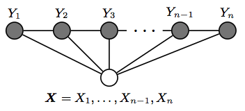
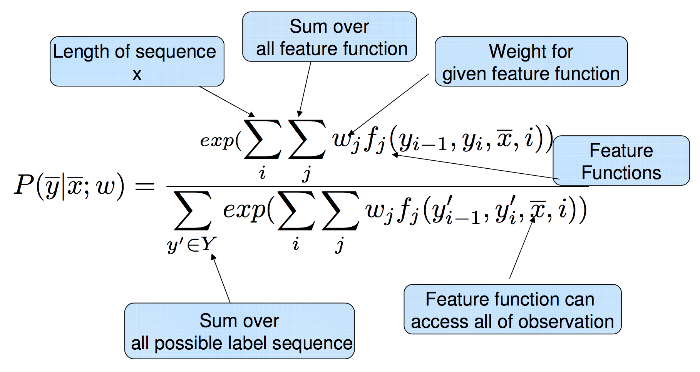
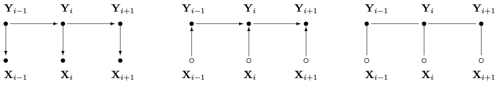

CRFs avoid the label bias problem a weakness exhibited by Maximum Entropy Markov Models (MEMM) and eliminates 2 unreasonable assumption in HMM.
MEMM is locally renormalized and suffers from the label bias problem, while CRFs are globally re-normalized.
HMM and MEMM are a directed graph, while CRF is an undirected graph
Output transition and observation probabilities are not modelled separately.
The inference algorithm in CRF is again based on Viterbi algorithm.
The definition of CRF
图： $G(V,E)$ ; 随机变量 $Y=(Y_v),\ v \in V$
$(X,Y)$ 成为一个条件随机场，当 $Y_v$ 中的任何一个随机变量条件于 $X$ 上服从图马尔可夫属性：$P(Y_{v} \mid X, Y_{w}, w \neq v) = P(Y_{v} \mid X, Y_{w}, w \sim v)$
$w \sim v$ 是指 $w$和$v$ 在图 $G$ 中是邻居关系
条件随机场即全局条件依赖于观测值 $X$ 的随机场
Linear chain CRF
Chain-strucutred CRFs globally conditioned on X
More detail on CRF
HMM vs MEMM vs CRF
计算 $\bar{y}$ 序列以最大化如下等式：
$\hat{\bar{y}} = \underset{\bar{y}}{\arg\max}\ P(\bar{y} \mid \bar{x}; \bar{w}) = \frac{\exp(\bar{w} \cdot F(\bar{x},\bar{y}))}{\sum\limits_{\bar{y}' \in Y} \exp(\bar{w} \cdot F(\bar{x},\bar{y}'))}$
得到：$\hat{\bar{y}} = \underset{\bar{y}}{\arg\max}\ \sum\limits_{i} \bar{w}\ f (y_{i-1}, y_{i}, \bar{x}, i)$
给定训练数据 $\{(\bar{x}_{1}, \bar{y}_{1}), \ldots , (\bar{x}_{m}, \bar{y}_{m})\}$ ,寻找最适合的参数 $\bar{w}$ 就是最大化：
$L(\bar{w}) = \sum\limits_{i=1}^{m} \log p( \bar{x}_{1} | \bar{y}_{1}, \bar{w} )$
得到： $\bar{w}^* = \underset{\bar{w}\ \in {\rm \ I\!R}^{d}} {\arg\max}\ \sum\limits_{i=1}^{m} \log p( \bar{x}_{i} | \bar{y}_{i}, \bar{w}) - \frac{\lambda}{2} \| \bar{w} \| ^{2}$
HMM与RNN有什么不同？